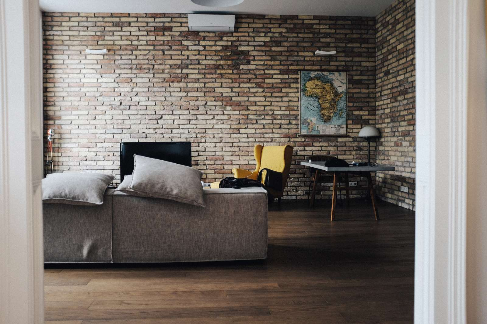

Hem/Vuxna
Vuxna
Från psykisk ohälsa till ett bättre mående
Terapi, parterapi, utredning och behandling vid skadligt bruk — hos legitimerade psykologer och psykoterapeuter med lång erfarenhet.
Det här kan vi hjälpa med
Att söka hjälp kan vara ett stort steg. Ofta finns det en längtan om att det ska ge en förändring — ett bättre mående, ett enklare liv.
I många sammanhang finns idag en större öppenhet om psykisk ohälsa. Trots det upplever många en skam över att må psykiskt dåligt, att ha problem med sina barn, på arbetet eller med sin partner. Hos oss arbetar legitimerade psykologer och legitimerade psykoterapeuter med lång erfarenhet av de flesta problem vi människor kan drabbas av.
Du behöver inte ha en diagnos, och du behöver inte veta vad problemet heter för att höra av dig.
Psykologisk behandling
Samtalsterapi och KBT för vuxna.
Vi börjar med en gemensam bedömning och formulerar därefter en plan utifrån dina mål och värderingar. För det mesta arbetar vi ”här och nu”, men om din tidigare historia påverkar hur du mår i dag finns även den med i samtalen.
Oro och ångest
Social ångest, panikångest, generaliserad ångest, tvångstankar och tvångshandlingar (OCD) samt fobier.
Läs merNedstämdhet och depression
Från långvarig nedstämdhet till återkommande depressioner. Vi arbetar med beteendeaktivering, kognitiv terapi och återfallsprevention.
Läs merStress och utmattning
När återhämtningen inte längre räcker till. Vi arbetar med belastning, gränser och en hållbar väg tillbaka.
Läs merSömnproblem
Svårt att somna, vakna mitt i natten eller sova utan att bli utvilad. KBT för insomni har starkt forskningsstöd.
Läs merTrauma och PTSD
Bearbetning av svåra händelser med metoder som prolonged exposure (PE). Jens Karström har särskilt intresse för traumabehandling.
Läs merSorg
Vid förlust och komplicerad sorg. Barry Karlsson forskar på området vid Uppsala universitet.
Läs merLåg självkänsla
Återkommande känslor av otillräcklighet, prestationskrav och svårt att stå upp för sig själv.
Läs merRelationsproblem
Återkommande konflikter, ensamhet i en relation, eller svårigheter som går igen från relation till relation.
Läs merFobier och flygfobi
Specifika fobier — sprutor, blod, höjder, hissar, flygplan. Exponeringsbehandling har bland de bästa resultaten inom psykologin.
Läs merNeuropsykiatriska funktionsnedsättningar
Behandling och anpassat stöd vid adhd och autism i vuxen ålder — med eller utan färdig diagnos.
Läs merParterapi
När ni bråkar om samma sak, hela tiden.
Vi arbetar bland annat med IBCT (Integrative Behavioral Couple Therapy), en KBT-baserad parterapi med gott forskningsstöd. Fokus ligger på hur ni samtalar med varandra, vad konflikterna egentligen handlar om, och vad ni vill med relationen.
Parterapi bokas i 60-minuterspass, eller 2 × 45 minuter. Aksel Reppling tar emot par.
Skadligt bruk & beroende
Alkohol, läkemedel, droger och spel.
Många upptäcker att alkohol eller andra substanser har börjat ta en alltför stor plats i livet, och känner en längtan efter att förändra det. Vi arbetar med bedömning och behandling vid riskbruk, missbruk och beroende — inklusive spelberoende — med metoder som återfallsprevention, motiverande samtal och MBRP (mindfulnessbaserad återfallsprevention).
Du är också välkommen om du är anhörig till någon som använder alkohol eller droger på ett sätt som skapar problem. Thomas Alm och Angeli Holmstedt har båda lång erfarenhet inom beroendeområdet.
Utredning & bedömning
Neuropsykiatrisk utredning för vuxna.
När du kommer till oss för en utredning har vi alltid ett första bedömningssamtal där vi tillsammans går igenom dina behov, problem och förväntningar. Därefter formulerar vi en frågeställning och gör upp en plan. När utredningen är klar går vi igenom resultatet tillsammans och du får ett skriftligt utlåtande. Vi lägger stor vikt vid att identifiera dina styrkor och svårigheter, så att rekommendationerna blir konkreta — oavsett vad utredningen visar.
Utredning av adhd
Psykologutredning med intervju, skattningsskalor och testning. Du får ett skriftligt utlåtande och konkreta rekommendationer.
Läs merUtredning av autism
Bedömning av autismspektrumtillstånd hos vuxna, med samma noggranna återkoppling och skriftliga utlåtande.
Läs merOmprövning av diagnos
Har du fått en diagnos som inte känns rätt, eller behöver den prövas på nytt? Elias Westerlund arbetar särskilt med omprövningar.
Läs merPsykiatrisk bedömning
Konsultation med specialistläkare.
Vi samarbetar med en erfaren specialistläkare i psykiatri och kan erbjuda psykiatrisk bedömning och behandling som komplement till psykologisk behandling. Kontakta oss för att höra hur det kan se ut i ditt fall.
Så går det till
Fyra steg, och du bestämmer takten.
Första kontakten
Du skriver eller ringer. Vi hör av oss så snart vi kan och bokar en tid. Du behöver inte ha en diagnos eller veta vad problemet heter.
Gemensam bedömning
Ett till tre samtal där vi tillsammans tar reda på vad du behöver hjälp med — och om du känner dig bekväm med oss.
En plan
Vi formulerar mål utifrån vad som är viktigt för dig, och kommer överens om metod och hur många samtal det troligen handlar om.
Behandling och avstämning
Vi arbetar mot målen och stämmer av regelbundet att behandlingen går i rätt riktning och att vi använder tiden väl.
Vem träffar du?
Fyra av oss arbetar främst med vuxna.
Elias Westerlund och Barry Karlsson arbetar med utredning och bedömning, och Karin Holmström med barn och unga.

Ångest, OCD och beroendeproblem, och stöd till dig som är anhörig. Utbildare i motiverande samtal och lärare i mindfulnessbaserade program.

Legitimerad psykolog sedan 1978. Missbruk och beroende, ångest och depression. Handledare inom psykiatri, primärvård och beroendevård.
Trauma och traumabehandling. Prolonged exposure, schematerapi och ACT. Tar emot remisser från Regionen.

Oro och ångest, fobier och nedstämdhet. Parterapi och föräldrastöd. Tidigare BUP och Studenthälsan vid Uppsala universitet.
Priser
Vad det kostar, utan att du behöver fråga.
Enskilt samtal
1 500 kr / 45 min
Parterapi
2 400 kr / 60 min
1 800 kr / 45 min. Ofta behövs minst 60 minuter, eller 2 × 45 minuter per besök.
Gäller privat finansierad terapi och konsultation. Moms tillkommer om arbetsgivare, försäkringsbolag eller socialtjänst betalar. Avbokning senare än 24 timmar före besöket debiteras i sin helhet.

Ta första steget när du är klar för det.
Skriv eller ring. Vi hör av oss så snart vi kan, och du behöver inte veta på förhand vad du vill ha hjälp med.
Akut hjälp
Behöver du hjälp direkt? Vi är en mottagning med bokade tider och kan inte ta emot akut. Ring 112 vid fara för liv. Du kan också ringa MIND Stödlinje på 90 101, eller söka psykakuten där du bor.